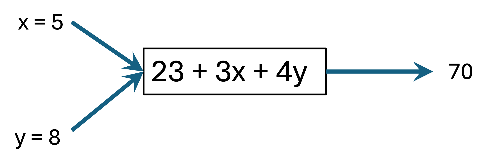
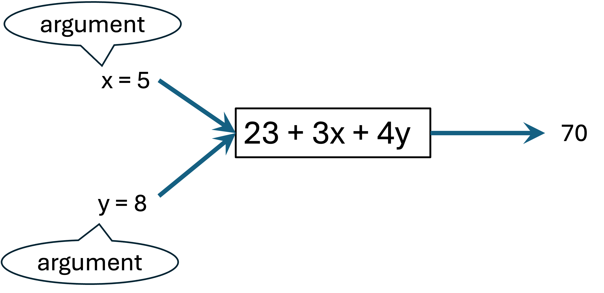
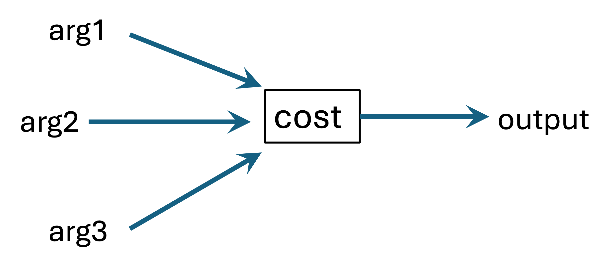

| year | name | country | time | sex | minutes |
|---|---|---|---|---|---|
| 2022 | Evans Chebet | Kenya | 02:06:51 | male | 127 |
| 2021 | Benson Kipruto | Kenya | 02:09:51 | male | 130 |
| 2019 | Lawrence Cherono | Kenya | 02:07:57 | male | 128 |
| 2018 | Yuki Kawauchi | Japan | 02:15:58 | male | 136 |
| 2017 | Geoffrey Kirui | Kenya | 02:09:37 | male | 130 |
| 2016 | Lemi Berhanu | Ethiopia | 02:12:45 | male | 133 |
| 2015 | Lelisa Desisa | Ethiopia | 02:09:17 | male | 129 |
| 2014 | Mebrahtom “Meb” Keflezighi | United States | 02:08:37 | male | 129 |
| 2013 | Lelisa Desisa | Ethiopia | 02:10:22 | male | 130 |
| 2012 | Wesley Korir | Kenya | 02:12:40 | male | 133 |
1 Data Frames and Variables
This chapter introduces data frame the type of R object in which we store data.
1.1 Learning outcomes
After working though this chapter, you will be able to:
- explain what a data frame is
- explain what a column and row of a data frame represent
- name the two types of variables that we will deal wigth in this course
- distinguish between numeric and categorical variables and provide examples of each
- explain what the term level of a categorical variable represents and provide examples
- explain why a column is also called a variable
- explain why a row is called an instance or specimen
- use R to do the following:
- load a data frame from a loaded package
- load a data frame from a Rdata file (later section)
- load a data frame from a csv file (later section)
- look at the first few rows in a data frame
- look at the last few rows in a data frame
- retrieve only the rows that satisfy certain conditions
- retrieve a subset of the columns of a data frame
- find the number of rows and columns in a data frame
- compute the average of a numeric column in a data frame
- find out how many rows are there in a data frame for each level of a categorical variable
1.2 The R Software Package for Statistics
In this course, we will be using the R software package for all computations and visualizations. While R offers a great deal of functionality, we will be using a limited subset that suffices for the course topics. In particular, we will be using a specific R package that contains all the functions and data we need for the course. You should install R and RStudio using the instructions provided in Chapter 31. That section also shows you how to use RStudio and how to load a package – specificaly the LSTbook package – into R.
1.3 R Data Frames
In R, we generally represent data in a simple tabular structure named data frame – a table with rows and columns. Table 1.1 shows an example of some initial rows from the Boston_marathon data frame contained in the LSTbook package.
We first define the term data frame and then explain some terms that the definitoion uses.
Data frame: A structured dataset organized as rows and columns, where rows correspond to individual observations and columns correspond to variables, with each column containing values of the same type.
A data frame contains data about some topic. Each row represents an occurence of the topic. For example, Table 1.1 contains data about the results of the Boston Marathon over the years. Each row represents the result for one year, for one gender. We also refer to a row as an observation, or as an instance, or in a medical or biology context, as a specimen.
Each column represents some attribute of interest about instances. In Table 1.1, we have columns to represent the year of the race, the name, county and sex of the winner and the finishing time.
In statistics, we generally refer to columns of a data frame as variables. We explain why in Section 1.4.
In the 1880’s, Francis Galton was developing ways to quantify the heritability of traits. As part of this work, he collected data on the heights of adult children and their parents. Table 1.2 shows the initial few rows of that data.
| family | father | mother | sex | height | nkids |
|---|---|---|---|---|---|
| 1 | 78.5 | 67.0 | M | 73.2 | 4 |
| 1 | 78.5 | 67.0 | F | 69.2 | 4 |
| 1 | 78.5 | 67.0 | F | 69.0 | 4 |
| 1 | 78.5 | 67.0 | F | 69.0 | 4 |
| 2 | 75.5 | 66.5 | M | 73.5 | 4 |
| 2 | 75.5 | 66.5 | M | 72.5 | 4 |
| 2 | 75.5 | 66.5 | F | 65.5 | 4 |
| 2 | 75.5 | 66.5 | F | 65.5 | 4 |
| 3 | 75.0 | 64.0 | M | 71.0 | 2 |
| 3 | 75.0 | 64.0 | F | 68.0 | 2 |
In Table 1.2, each row represents an adult child. The variables in this data frame represent the father’s height (father), mother’s height (mother), sex of the adult child (sex), height of the adult child (height), and the number of children (nkinds) in the family. Each family also has a unique number for each family (family).
1.4 Variables
If we look at a column of a data frame, say the column time in Table 1.1, we see that each row can potentially have a different value in this column. More generally, the values in a column of a data frame can vary from row to row – no wonder we call columns of a data frame variables. Going forward, we will use the term variable to refer to a column of a data frame.
In this course, you will be working with many data frames. You should always be sure to understand what a row of a data frame contains information about. In the case of Table 1.1, each row rewpresents the results of one race. In the case of Table 1.2, each row represents one adult child. We use the term unit of measurement to refer to the object or concept about which each row stores information.
1.5 Numerical and Categorical Variables
In Table 1.1, the variable minutes has values that are numbers. We can such variables numerical variables. On the other hand, the variable sex can take on only the values male and female which are not numeric. Similarly, the variable country can also take on non-numetic values. We call such variables – those that take on non-numerical values categorical. The individual values of a particular categorical variable are called levels. Thus the values mal and female are the levels of the variable sex and the country names like Kenya, Japan and Ethiopia are the levels of the variable country.
1.6 Data Frames in R
In this section we look at the practical side of data frames – using them in R. We will only look at using data frames that are built in to the LSTbook package and mecome available as soon as we load the package LSTbook. If you have not already done so, you should install R and RStudio and learn how o use RStudio using the instructions from Chapter 31.
1.6.1 Viewing the first few rows of a data frame
In an RStudio command prompt you can enter the name of the data frame to get a preview of its contents.
Boston_marathonLet us understand the output above. The first row says:
# A tibble: 175 × 6This says that the data frame (also called tibble) has 175 rows and 6 columns.
The second line mentiones the column (variable) names. The third line has sone specific notation within angle brackets below each variable. This is telling us what type of value is stored in each column. -
If the data frame has many columns and all of them will not fit in our output width, it will only display the columns that will fit and provide information below about the additional columns. In the present case all columns do fit and so there is not additional information provided.
1.6.2 Functions
You are likely familiar with the term functions as used in mathematics – you rpovide an input to the function and it performs some computation and provides an output. For example, we might have a function that takes a number as input and produces its square as output. Given the number 5 as input, it will produce the number 25 as its output. Given the number 1.5 as input, it will produce its square 2.25 as its output.
Pictorially we might represent a function as a box that has one or more inputs and produces a single output. (We can also have functions that take no inputs and produce an output, but we will not worry about them now.) See Figure 1.1.

We might have functions that take more than one input. For example, a function might take two inputs x and y, and produce 23 + 3x + 4y as output. Figure 1.2 shows a function with two inputs.

In computing, we commonly refer to a function’s inputs as its arguments. Figure 1.3 illustrates this.

The functions we considered in our examples thus far in Figure 1.1, Figure 1.2, and Figure 1.3 have been so simple that we were able to show the actual computation in the box representing the function. Most functions we use in real-life are more complex and we give them evocative names. In such cases, it makes more sense to place the name of the function in the box. Figure 1.4 shows a generirc repesentation of a function named cost with three arguments named arg1, arg2, and arg3.

When we use a function to perform some computation, we are said to invoke the function. We generally invoke a function by using its name and by supplying the argument values in parentheses, as Figure 1.5 shows. We also use the term passing arguments to functions to refer to the act of supplying the inputs to a function. We also refer to the result of a function as its return value. We will also speak of a function as returning something. Figure 1.5 also shows that a function argumnent can be numeric or non-numeric.
In the next section, we look at using functions to perform computing in R. At that time we will look at a different way of passing arguments to functions.
Almost all forms of computing, including statistical computing, make significant use of functions. In this course, many of the functions we use take data frame as input and produce a data frame as output. Let us now look at how we use functions in R to work with data and to perform statistical computations.
1.7 Using R functions
We will now look at some common R functions that we will use repeatedly in this course.
1.7.1 nrow
We will consider the nrow() function that allows us to find out how many rows a data frame contains. We pass a data frame as argument to the nrow() function and it returns a number specifying how many rows the argument data frame has. For example, to find out how many rows the Boston_marathon data frame has, we can use the following code.
nrow(Boston_marathon)[1] 175In the code above, we used the style of function invocation that Figure 1.5 introduced.
1.7.2 The pipe operator
In this course we also use another method of passing an argument to a function – via pipes. Let us first see the code and then learn how it works. We will invoke the nrow() function again, but using a different approach. The code below does exactly what the earlier code accomplished – finding the number of rows in a data frame.
Boston_marathon |> nrow()[1] 175In the code above, we are still passing the Boston_marathon data frame as an argument to the nrow() function, but we are passing it along a pipe which appears in the code as “|>”.
Figure 1.6 clarifies code.

The pipe operator “|>” has the effect of injecting whatever appears on its left hand side as an argument to the function on the right hand side. Figure 1.7 makes this very explicit by literally depicting the pipe operator “|>” as a physical pipe.

Going forward, we will use this pipe approach extensively, but also mix in the earlier approach in places. You will catch on to our patters pretty easily.
1.7.3 ncol
We can use the ncol() function to find the number of columns in a data frame.
Boston_marathon |> ncol()[1] 6The above shows us that the Boston_marathon data frame has 6 columns or variables.
1.7.4 head
You can use the head() function to preview the first several rows of a data frame. This time we will use the Births2022 data frame from the LSTbook package.
Births2022 |> head()The above previewed the first six rows of Births2022 by default because we did not specify how many rows we wanted. We can specify that explicitly. The following previews the first 10 rows.
Births2022 |> head(10)1.7.5 names
We use this to find the names of the columns in a data frame.
Births2022 |> names() [1] "month" "dow"
[3] "place" "paternity"
[5] "meduc" "feduc"
[7] "married" "fage"
[9] "mage" "total_kids"
[11] "interval" "prenatal_start"
[13] "prenatal_visits" "mheight"
[15] "wt_pre" "wt_delivery"
[17] "diabetes_pre" "diabetes_gest"
[19] "hbp_pre" "hbp_gest"
[21] "eclampsia" "induction"
[23] "augmentation" "anesthesia"
[25] "presentation" "method"
[27] "trial_at_labor" "attendant"
[29] "payment" "apgar5"
[31] "apgar10" "plurality"
[33] "sex" "duration"
[35] "menses" "weight"
[37] "living" "breastfed" 1.7.6 summarize
We often calculate summaries (like the average of a variable) of the data contained in a data frame. We will discuss other examples of summaries – like variance, standard deviation, covariance, and correlation coefficient – at appropriate points in the course.
The code below shows how to compute the average of the time variable in the Boston_marathon data frame.
Boston_marathon |>
summarize(avg_time = mean(time))In the above code, we passed the Boston_marathon data frame via a pipe to the summarize function. Within the summarize function, we have used the R function mean to compute the average by passing the variable time as an argument to the mean function.
We chose to name the return value from the mean function (the average time) as avg_time. You do not necessarily need to name the summaries we compute in the summarize function, but we strongly recommend it.
For most of the summaries we compute we will use the general summarize function. WIthin the summarize function, we use specific functions depending on the kind of summary we are computing. In the previous example, we used the mean function for the average. Later we will see other functions to use within the summarize function.
1.7.7 count
The count() function comes in handy when we want to count how many occurrences of each distinct value in a column are present in a variable. For example, suppose we want to find how many rows are there for each sex we can do the following.
Boston_marathon |> count(sex)Similarly, if we wanted to find out how many times each country occurs, we can do this.
Boston_marathon |> count(country)As you can see, the count() function comes in most handy when a variable is categorical. It also works for numerical variables, but will apply much more rarely in these cases.
1.8 Missing values (NAs)
Suppose the HR department of a company has a data frame of information about employees with variables (columns) employee_id, first_name, last_name, base_salary, phone_no, and base_office. It is not essential that we have data on every variabkle for every row. For example, it could be the case that the company does not have a phone_no for some employees and does not have a base_office for some. These are called missing values. A missing value denotes somnething whose value we do not know. A missing value is not the same as a blank character value or a zero numeric value. Blanks and zero are valid and known values for variables. A missing value is different – we do not know the value.
Table 1.3 shows a data frame with no missing values. In each row, we see values for every variable.
| channel | advertising_spend_k | weekly_sales_k |
|---|---|---|
| Search Ads | 28.1 | 152 |
| Search Ads | 30.6 | 152 |
| Search Ads | 93.4 | 369 |
| Search Ads | 51.3 | 289 |
| Retail Promo | 54.6 | 175 |
| Search Ads | 86.6 | 342 |
| Retail Promo | 46.5 | 169 |
| Retail Promo | 41.4 | 142 |
| Search Ads | 78.1 | 322 |
| Retail Promo | 41.1 | 182 |
On the other hand Table 1.4 shows a small data frame with missing values.
| employee_id | first_name | last_name | base_salary | phone_no | base_office |
|---|---|---|---|---|---|
| 10210 | Betty | Chu | 67000 | +1 (777) 555-1212 | New Jersey |
| 24532 | Jason | Fingleton | 85000 | +1 (732) 555-1212 | NA |
| 56437 | Shim | Sung | 76000 | NA | New York |
| 20320 | Ravi | Shankar | 100000 | +91 81487 03210 | Shankar |
| 67582 | Emily | Weitz | 87000 | NA | Weitz |
1.9 Codebook
Before using a data frame, we need to understand it well. That means, at the very least, that we know the unit of observation, the meaning of each variable and the units of measurement where applicable. This information is in the codebook for a data frame. You can use the ? operator for this purpose as the example code below shows.
?Boston_marathonThis will show the codebook in the bottom right pane of RStudio.